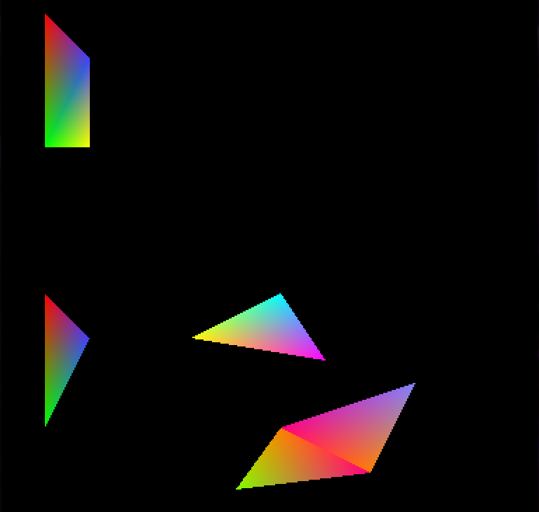

Sparen's Danmakufu ph3 Tutorials Lesson 29 - Introduction to Primitive Objects and 2D Sprite Lists
Table of Contents
- Part 1: What will be covered in this lesson?
- Part 2: What are Primitives?
- Part 3: How do I utilize Primitive Functions in Danmakufu?
- Part 4: How do I utilize Primitives (General Notes)?
- Part 4a: How do I utilize Primitives (PRIMITIVE_TRIANGLELIST)?
- Part 4b: How do I utilize Primitives (PRIMITIVE_TRIANGLESTRIP)?
- Part 4c: How do I utilize Primitives (PRIMITIVE_TRIANGLEFAN)?
- Part 4d: How do I utilize Primitives (PRIMITIVE_LINELIST)?
- Part 4e: How do I utilize Primitives (PRIMITIVE_LINESTRIP)?
- Part 4f: How do I utilize Primitives (PRIMITIVE_POINT_LIST)?
- Part 4g: Which primitive type should I use?
- Part 5: How can I create magic circles?
- Quiz: Primitives
- Part 6: What is a 2D Sprite List?
- Part 7: How do I utilize 2D Sprite Lists?
- Summary
- Sources and External Resources
Part 1: What will be covered in this lesson?
In this lesson, we will cover primitives in Danmakufu, including supported types of primitives as well as examples. In addition, we will cover 2D Sprite Lists at the end. We will be referring to the Primitive Object Functions and 2D Sprite List Object Functions heavily in this section. It is expected that you are already familiar with sprites. If you are not familiar with these, refer to Lesson 13.
Part 2: What are Primitives?
Generally speaking, geometric primitives (AKA prims) are the simplest possible geometric objects that can be handled by the system. The most basic are points and lines/line segments, but in Danmakufu we will focus on the triangle.
Primitives are a key component in how everything you see on screen gets rendered. Rectangular 2D sprites can be broken down into two triangles, for example.
Danmakufu supports six types of primitives. Triangle Fan, Triangle Strip, and Triangle List are the primary documented types, while Line List, Line Strip, and Point List are undocumented. We will go through each of these one at a time.
Part 3: How do I utilize Primitive Functions in Danmakufu?
We've already seen most of the basic Primitive Functions - ObjPrim_Create(OBJ_PRIMITIVE_2D) will create a 2D Primitive. We can set textures with ObjPrim_SetTexture().
Now let's go over some of the ones that don't apply to 2D Sprites.
First, there are various types of Primitives. We will cover those supported by Danmakufu. For Triangle-based Primitives, we have Triangle List, Triangle Strip, and Triangle Fan. For Line-based Primitives we have Line List and Line Strip. For Points we only have Point List - not like you can do much else with just points. These can be set using ObjPrim_SetPrimitiveType(). Do note that the Line and Point primitive types are not officially documented in Danmakufu, but they should work appropriately.
Primitives are defined using vertices. We will need to set the vertex count for our primitives using ObjPrim_SetVertexCount(). It can be retrieved with ObjPrim_GetVertexCount().
Each vertex can have a position (relative to the position of the render object as a whole), texture coordinate, color, and alpha. These are set using ObjPrim_SetVertexPosition(), ObjPrim_SetVertexUV() or ObjPrim_SetVertexUVT(), ObjPrim_SetVertexColor(), and ObjPrim_SetVertexAlpha(), respectively
In regards to the UV coordinates (texture coordinates), you can think of it as follows: given a 512x512 texture, the top left (0, 0) has a corresponding texture coordinate of (0.0, 0.0) while the bottom right (512, 512) has a corresponding texture coordinate of (1.0, 1.0). So if we wanted to use the top left quadrant of the texture, we could use (0, 0), (0, 256), (256, 0), and (256, 256), or we could use (0.0, 0.0), (0.0, 0.5), (0.5, 0.0), (0.5, 0.5).
For more information, check the function reference for UV and UVT.
Anyways, at this point we should be ready to begin utilizing our primitives.
Part 4: How do I utilize Primitives (General Notes)?
In Part 4 of this guide, I will not be setting a texture for each primitive. This will force Danmakufu to default to pure white, which, together with color will better illustrate the behavior of each primitive type. It is highly recommended that if you are copying the code directly, you set a texture and appropriate source + dest rects. In addition, I will be using SVG and screenshots taken from Danmakufu in my examples. Code will be provided for generating the images.
In addition, keep in mind that ObjRender functions will work on primitives. So if you were to, say, set the position of a Primitive Object, the entire object would be moved elsewhere, with all vertices positioned relative to the render position of the primitive object.
Finally, the colors attacked to the vertices in the SVG denote the colors I am using for the points in the Danmakufu Examples. This provides a visual display of how the blending works.
Part 4a: How do I utilize Primitives (PRIMITIVE_TRIANGLELIST)?
Triangle Lists are, well, lists of triangles. No surprise there. Every three vertices you specify forms a triangle. To have two triangles, use six vertices.
Let's illustrate this with the following two examples.
In Example 1, vertices 1 and 4, 2 and 5 are at the same location with the same color, resulting in the effect you see below. In contrast, in Example 2, vertices 9 and 10 have their colors swapped compared to vertices 6 and 7, resulting in a different effect.
task Example1 {
let obj = ObjPrim_Create(OBJ_PRIMITIVE_2D);
ObjPrim_SetPrimitiveType(obj, PRIMITIVE_TRIANGLELIST);
ObjPrim_SetVertexCount(obj, 6);
ObjPrim_SetVertexPosition(obj, 0, 32, 32, 0);
ObjPrim_SetVertexColor(obj, 0, 255, 0, 0);
ObjPrim_SetVertexPosition(obj, 1, 32, 128, 0);
ObjPrim_SetVertexColor(obj, 1, 0, 255, 0);
ObjPrim_SetVertexPosition(obj, 2, 64, 64, 0);
ObjPrim_SetVertexColor(obj, 2, 64, 64, 255);
ObjPrim_SetVertexPosition(obj, 3, 64, 128, 0);
ObjPrim_SetVertexColor(obj, 3, 255, 255, 0);
ObjPrim_SetVertexPosition(obj, 4, 32, 128, 0);
ObjPrim_SetVertexColor(obj, 4, 0, 255, 0);
ObjPrim_SetVertexPosition(obj, 5, 64, 64, 0);
ObjPrim_SetVertexColor(obj, 5, 64, 64, 255);
}
task Example2 {
let obj = ObjPrim_Create(OBJ_PRIMITIVE_2D);
ObjPrim_SetPrimitiveType(obj, PRIMITIVE_TRIANGLELIST);
ObjPrim_SetVertexCount(obj, 12);
ObjRender_SetY(obj, 200);
ObjPrim_SetVertexPosition(obj, 0, 32, 32, 0);
ObjPrim_SetVertexColor(obj, 0, 255, 0, 0);
ObjPrim_SetVertexPosition(obj, 1, 32, 128, 0);
ObjPrim_SetVertexColor(obj, 1, 0, 255, 0);
ObjPrim_SetVertexPosition(obj, 2, 64, 064, 0);
ObjPrim_SetVertexColor(obj, 2, 64, 64, 255);
ObjPrim_SetVertexPosition(obj, 3, 136, 64, 0);
ObjPrim_SetVertexColor(obj, 3, 255, 255, 0);
ObjPrim_SetVertexPosition(obj, 4, 232, 80, 0);
ObjPrim_SetVertexColor(obj, 4, 255, 0, 255);
ObjPrim_SetVertexPosition(obj, 5, 200, 32, 0);
ObjPrim_SetVertexColor(obj, 5, 0, 255, 255);
ObjPrim_SetVertexPosition(obj, 6, 200, 128, 0);
ObjPrim_SetVertexColor(obj, 6, 255, 128, 0);
ObjPrim_SetVertexPosition(obj, 7, 264, 160, 0);
ObjPrim_SetVertexColor(obj, 7, 255, 0, 128);
ObjPrim_SetVertexPosition(obj, 8, 168, 172, 0);
ObjPrim_SetVertexColor(obj, 8, 128, 255, 0);
ObjPrim_SetVertexPosition(obj, 9, 200, 128, 0);
ObjPrim_SetVertexColor(obj, 9, 255, 0, 128);
ObjPrim_SetVertexPosition(obj, 10, 264, 160, 0);
ObjPrim_SetVertexColor(obj, 10, 255, 128, 0);
ObjPrim_SetVertexPosition(obj, 11, 296, 96, 0);
ObjPrim_SetVertexColor(obj, 11, 128, 128, 255);
}Part 4b: How do I utilize Primitives (PRIMITIVE_TRIANGLESTRIP)?
For Triangle Strip and Triangle Fan, the types you will be using the most often, it is best to compare the two and see how each of them works. Triangle Strip is relatively intuitive. You add your first vertex and your second. When you add your third, it forms a triangle with the first and second, just like with Triangle List. However, when you add your fourth vertex, it forms a triangle with the second and third. The fifth vertex will form a triangle with the third and fourth, etc.
As you can see, Triangle Strips are useful when you want to form a triangle with the previous two vertices. No prior knowledge of vertices before the last two is needed... but on the flip side knowledge of the vertices before the last two is not accessible.
Let's illustrate Triangle Strip usage with the following example.
As you can see, the colors are all emanating from their vertices without sharp edges.
task ExampleB1 {
let obj = ObjPrim_Create(OBJ_PRIMITIVE_2D);
ObjPrim_SetPrimitiveType(obj, PRIMITIVE_TRIANGLESTRIP);
ObjPrim_SetVertexCount(obj, 8);
ObjPrim_SetVertexPosition(obj, 0, 32, 32, 0);
ObjPrim_SetVertexColor(obj, 0, 255, 0, 0);
ObjPrim_SetVertexPosition(obj, 1, 32, 128, 0);
ObjPrim_SetVertexColor(obj, 1, 0, 255, 0);
ObjPrim_SetVertexPosition(obj, 2, 64, 64, 0);
ObjPrim_SetVertexColor(obj, 2, 64, 64, 255);
ObjPrim_SetVertexPosition(obj, 3, 64, 160, 0);
ObjPrim_SetVertexColor(obj, 3, 255, 255, 0);
ObjPrim_SetVertexPosition(obj, 4, 96, 32, 0);
ObjPrim_SetVertexColor(obj, 4, 255, 0, 255);
ObjPrim_SetVertexPosition(obj, 5, 96, 128, 0);
ObjPrim_SetVertexColor(obj, 5, 0, 255, 255);
ObjPrim_SetVertexPosition(obj, 6, 144, 32, 0);
ObjPrim_SetVertexColor(obj, 6, 255, 128, 0);
ObjPrim_SetVertexPosition(obj, 7, 144, 128, 0);
ObjPrim_SetVertexColor(obj, 7, 255, 0, 128);
}Part 4c: How do I utilize Primitives (PRIMITIVE_TRIANGLEFAN)?
TriangleFan is deprecated in Direct3D10 and later. While Danmakufu ph3 will continue to support it, many modern game engines will not. It is recommended that you use TriangleStrip instead wherever possible, especially if you plan to do game development outside of Danmakufu.
As stated earlier, for Triangle Strip and Triangle Fan, the types you will be using the most often, it is best to compare the two and see how each of them works. Triangle Fan is relatively intuitive. You add your first vertex and your second. When you add your third, it forms a triangle with the first and second, just like with Triangle List and Triangle Strip. Each vertex after this forms a triangle with the previous vertex and the first. In other words, the very first vertex is present in every single triangle.
As you can see, Triangle Fans are useful when organizing a shape around a point (like its namesake, the fan). However, this restriction prevents Triangle Fans from being used effectively outside of this specific niche.
Let's illustrate Triangle Fan usage with the following example.
As can be seen above, Triangle Fans are well suited towards radial applications.
task ExampleC1 {
let obj = ObjPrim_Create(OBJ_PRIMITIVE_2D);
ObjPrim_SetPrimitiveType(obj, PRIMITIVE_TRIANGLEFAN);
ObjPrim_SetVertexCount(obj, 10);
ObjPrim_SetVertexPosition(obj, 0, 96, 96, 0);
ObjPrim_SetVertexColor(obj, 0, 204, 204, 204);
ObjPrim_SetVertexPosition(obj, 1, 96, 32, 0);
ObjPrim_SetVertexColor(obj, 1, 255, 0, 0);
ObjPrim_SetVertexPosition(obj, 2, 140, 52, 0);
ObjPrim_SetVertexColor(obj, 2, 0, 255, 0);
ObjPrim_SetVertexPosition(obj, 3, 160, 96, 0);
ObjPrim_SetVertexColor(obj, 3, 64, 64, 255);
ObjPrim_SetVertexPosition(obj, 4, 140, 140, 0);
ObjPrim_SetVertexColor(obj, 4, 255, 255, 0);
ObjPrim_SetVertexPosition(obj, 5, 96, 160, 0);
ObjPrim_SetVertexColor(obj, 5, 255, 0, 255);
ObjPrim_SetVertexPosition(obj, 6, 52, 140, 0);
ObjPrim_SetVertexColor(obj, 6, 0, 255, 255);
ObjPrim_SetVertexPosition(obj, 7, 32, 96, 0);
ObjPrim_SetVertexColor(obj, 7, 255, 128, 0);
ObjPrim_SetVertexPosition(obj, 8, 52, 52, 0);
ObjPrim_SetVertexColor(obj, 8, 255, 0, 128);
ObjPrim_SetVertexPosition(obj, 9, 96, 32, 0);
ObjPrim_SetVertexColor(obj, 9, 255, 0, 0);
}Part 4d: How do I utilize Primitives (PRIMITIVE_LINELIST)?
Now that we've cleared all of the triangles, it is time for lines! A Line List is, similarly to a Triangle List, just a list of lines. Every pair of vertices forms a line between them.
Let's illustrate Line List usage with the following example.
As can be seen above, Line Lists behave exactly as you might expect. Each pair of vertices forms a line. As with other primitive types, portions drawn later will cover portions drawn earlier, as visible with the line crossings.
task ExampleD1 {
let obj = ObjPrim_Create(OBJ_PRIMITIVE_2D);
ObjPrim_SetPrimitiveType(obj, PRIMITIVE_LINELIST);
ObjPrim_SetVertexCount(obj, 8);
ObjPrim_SetVertexPosition(obj, 0, 96, 32, 0);
ObjPrim_SetVertexColor(obj, 0, 255, 0, 0);
ObjPrim_SetVertexPosition(obj, 1, 140, 52, 0);
ObjPrim_SetVertexColor(obj, 1, 0, 255, 0);
ObjPrim_SetVertexPosition(obj, 2, 160, 96, 0);
ObjPrim_SetVertexColor(obj, 2, 64, 64, 255);
ObjPrim_SetVertexPosition(obj, 3, 140, 140, 0);
ObjPrim_SetVertexColor(obj, 3, 255, 255, 0);
ObjPrim_SetVertexPosition(obj, 4, 96, 160, 0);
ObjPrim_SetVertexColor(obj, 4, 255, 0, 255);
ObjPrim_SetVertexPosition(obj, 5, 52, 140, 0);
ObjPrim_SetVertexColor(obj, 5, 0, 255, 255);
ObjPrim_SetVertexPosition(obj, 6, 32, 96, 0);
ObjPrim_SetVertexColor(obj, 6, 255, 128, 0);
ObjPrim_SetVertexPosition(obj, 7, 52, 52, 0);
ObjPrim_SetVertexColor(obj, 7, 255, 0, 128);
}
task ExampleD2 {
let obj = ObjPrim_Create(OBJ_PRIMITIVE_2D);
ObjPrim_SetPrimitiveType(obj, PRIMITIVE_LINELIST);
ObjPrim_SetVertexCount(obj, 10);
ObjRender_SetY(obj, 200);
ObjPrim_SetVertexPosition(obj, 0, 64, 64, 0);
ObjPrim_SetVertexColor(obj, 0, 255, 0, 0);
ObjPrim_SetVertexPosition(obj, 1, 96, 128, 0);
ObjPrim_SetVertexColor(obj, 1, 0, 255, 0);
ObjPrim_SetVertexPosition(obj, 2, 160, 32, 0);
ObjPrim_SetVertexColor(obj, 2, 64, 64, 255);
ObjPrim_SetVertexPosition(obj, 3, 56, 140, 0);
ObjPrim_SetVertexColor(obj, 3, 255, 255, 0);
ObjPrim_SetVertexPosition(obj, 4, 120, 160, 0);
ObjPrim_SetVertexColor(obj, 4, 255, 0, 255);
ObjPrim_SetVertexPosition(obj, 5, 200, 32, 0);
ObjPrim_SetVertexColor(obj, 5, 0, 255, 255);
ObjPrim_SetVertexPosition(obj, 6, 216, 96, 0);
ObjPrim_SetVertexColor(obj, 6, 255, 128, 0);
ObjPrim_SetVertexPosition(obj, 7, 248, 52, 0);
ObjPrim_SetVertexColor(obj, 7, 255, 0, 128);
ObjPrim_SetVertexPosition(obj, 8, 200, 32, 0);
ObjPrim_SetVertexColor(obj, 8, 0, 255, 255);
ObjPrim_SetVertexPosition(obj, 9, 248, 128, 0);
ObjPrim_SetVertexColor(obj, 9, 128, 255, 0);
}Part 4e: How do I utilize Primitives (PRIMITIVE_LINESTRIP)?
It is now time for Line Strips. Similarly to Triangle Strips, each vertex connects to the previous. Line Strips are incredibly useful for effects and are well-used in main series Touhou games (Seiga's orbs, Sanae's bomb).
As can be seen above, Line Strips are quite effective at linking consecutive vertices together. Of course each vertex connects to the prior, so if you want cyclic structures with shared vertices, you will, similarly to Triangle Strips, need to duplicate vertices (such as in the first example).
task ExampleE1 {
let obj = ObjPrim_Create(OBJ_PRIMITIVE_2D);
ObjPrim_SetPrimitiveType(obj, PRIMITIVE_LINESTRIP);
ObjPrim_SetVertexCount(obj, 9);
ObjPrim_SetVertexPosition(obj, 0, 96, 32, 0);
ObjPrim_SetVertexColor(obj, 0, 255, 0, 0);
ObjPrim_SetVertexPosition(obj, 1, 140, 52, 0);
ObjPrim_SetVertexColor(obj, 1, 0, 255, 0);
ObjPrim_SetVertexPosition(obj, 2, 160, 96, 0);
ObjPrim_SetVertexColor(obj, 2, 64, 64, 255);
ObjPrim_SetVertexPosition(obj, 3, 140, 140, 0);
ObjPrim_SetVertexColor(obj, 3, 255, 255, 0);
ObjPrim_SetVertexPosition(obj, 4, 96, 160, 0);
ObjPrim_SetVertexColor(obj, 4, 255, 0, 255);
ObjPrim_SetVertexPosition(obj, 5, 52, 140, 0);
ObjPrim_SetVertexColor(obj, 5, 0, 255, 255);
ObjPrim_SetVertexPosition(obj, 6, 32, 96, 0);
ObjPrim_SetVertexColor(obj, 6, 255, 128, 0);
ObjPrim_SetVertexPosition(obj, 7, 52, 52, 0);
ObjPrim_SetVertexColor(obj, 7, 255, 0, 128);
ObjPrim_SetVertexPosition(obj, 8, 96, 32, 0);
ObjPrim_SetVertexColor(obj, 8, 255, 0, 0);
}
task ExampleE2 {
let obj = ObjPrim_Create(OBJ_PRIMITIVE_2D);
ObjPrim_SetPrimitiveType(obj, PRIMITIVE_LINESTRIP);
ObjPrim_SetVertexCount(obj, 5);
ObjRender_SetY(obj, 200);
ObjPrim_SetVertexPosition(obj, 0, 32, 96, 0);
ObjPrim_SetVertexColor(obj, 0, 255, 0, 0);
ObjPrim_SetVertexPosition(obj, 1, 64, 64, 0);
ObjPrim_SetVertexColor(obj, 1, 0, 255, 0);
ObjPrim_SetVertexPosition(obj, 2, 128, 128, 0);
ObjPrim_SetVertexColor(obj, 2, 64, 64, 255);
ObjPrim_SetVertexPosition(obj, 3, 192, 64, 0);
ObjPrim_SetVertexColor(obj, 3, 255, 255, 0);
ObjPrim_SetVertexPosition(obj, 4, 224, 96, 0);
ObjPrim_SetVertexColor(obj, 4, 255, 0, 255);
}Part 4f: How do I utilize Primitives (PRIMITIVE_POINT_LIST)?
Point Lists are... lists of pixel-size points. They are almost useless in Danmakufu since they can't even serve as particle effects due to their size. However, you can get some pretty interesting animations. I won't be providing a SVG example since it's somewhat pointless (haha), but have an animation :)
Above image is a still; see code for animation below.
@Initialize{
objBoss = ObjEnemy_Create(OBJ_ENEMY_BOSS);
ObjEnemy_Regist(objBoss);
ObjMove_SetPosition(objBoss, 192, -800);
ExampleF1(64, 1, 6, 0);
ExampleF1(64, 1.1, -6, 60);
ExampleF1(64, 1.2, 12, 120);
ExampleF1(64, 1.3, -12, 180);
ExampleF1(64, 1.4, 18, 240);
ExampleF1(64, 1.5, -18, 300);
}
@MainLoop{
yield;
}
task ExampleF1(num, scale, spd, offset) {
let obj = ObjPrim_Create(OBJ_PRIMITIVE_2D);
let radius = 64*scale;
let count = offset;
ObjPrim_SetPrimitiveType(obj, PRIMITIVE_POINT_LIST);
ObjPrim_SetVertexCount(obj, num);
ObjRender_SetPosition(obj, 192, 224, 1);
loop {
radius = scale * (64 + 64*cos(count*3));
ascent(i in 0..num) {
ObjPrim_SetVertexPosition(obj, i, radius*cos(count*spd + 360/num*i), radius*sin(count*spd + 360/num*i), 0);
ObjPrim_SetVertexColor(obj, i, 192 + 64*cos(360/num*i*4), 255, 255);
ObjPrim_SetVertexAlpha(obj, i, 192 + 64*cos(360/num*i*4));
}
count++;
yield;
}
}Part 4g: Which primitive type should I use?
Now that you have seen the six available primitive types in Danmakufu, we will discuss when you should use each type. First, comparing Triangle List, Triangle Strip and Triangle Fan.
To begin, Triangle List is almost always the least efficient of the three. It requires the most vertices (for a rectangle, Triangle Strip and Triangle Fan require four vertices, while Triangle List requires six!). However, it is the easiest to understand, the easiest to customize, and is extremely versatile.
Triangle Strip, as stated earlier, has the advantage of not referring to any vertices besides the last two. On the other hand, Triangle Fan has every vertex with an edge to the first vertex and the previous vertex. This means that if you want to, say, make an Octagon with a color gradient emitting from the center (refer to Triangle Fan example), it can be done with a total of ten vertices (one for the center, with the second vertex also serving as the last). In comparison, a Triangle Strip requires duplicating over the center vertex multiple times and requires 14 vertices. However, it is impossible to utilize Triangle Fans for anything that explicitly forbids using the first vertex. The sheet example utilized for the Triangle Strip is a clear example.
For a better comparison in regards to how the two work, we will take the examples we used for Triangle Strip and Triangle Fan, and switch the primitive type in Danmakufu without changing any vertices.
On the left are the examples used in this lesson. On the right are the same vertices, but with the other primitive type. Note how by shifting the starting vertex in the bottom right, it is possible to obtain a 'ribbon' formation, as well as the folding nature of the top right.
There are many different things you can do with Primitives, and it is up to you to do what you find to be the best option.
Do note that Triangle Fans are deprecated in later versions of DirectX and are typically less efficient than Triangle Strips due to the need to refer to the first vertex. As a result, it is recommended that Triangle Strips be used whenever possible.
In regards to Line List vs Line Strip, Line List has almost no practical usage in Danmakufu, while Line Strip is primarily used for effects (such as the aforementioned Sanae bomb/Seiga orb graphics). As a result, Line Strip will almost always be the one that you use.
Part 5: How can I create magic circles?
Magic Circles are a good example of what Primitives are capable of. In this section, I will provide a standard Magic Circle implementation based on built-in Magic Circles that come with Danmakufu (though edited slightly).
We will use the following texture: u3l29sample.png. NOTE: Depending on your browser, it may render as a white texture on a white background like the French Flag from the 1820s. I swear it's actually there.
{kind=link}
First thing's first. What is our end goal? Our end goal is a Primitive Magic Circle, which takes a rectangular texture and renders it as a closed loop. Immediately, we can rule out Triangle Fan as an option, as we cannot use a shared vertex for a Magic Circle.
And so we must use Triangle Strips.
task MagicCircle {
let imgpath = GetCurrentScriptDirectory() ~ "./img/u3l29sample.png"; // Path for the texture to use
let NUM_VERTEX = 32; // Number of vertices we will use for this Magic Circle.
// 32 vertices => 15 edges on the outside, as the last two vertices are duplicated over the first two to close the ring.
let MC_RADIUS = 96; // Maximum radius of our Magic Circle, in pixels
let MC_SCALE = 1; // Scaling of our entire Magic Circle
// Keep track of the distances from the origin for each vertex
let listRadius = [];
loop(NUM_VERTEX) {
listRadius = listRadius ~ [0];
}
// Create our primitive
let objCirc = ObjPrim_Create(OBJ_PRIMITIVE_2D);
ObjPrim_SetTexture(objCirc, imgpath); // Set the texture.
ObjPrim_SetPrimitiveType(objCirc, PRIMITIVE_TRIANGLESTRIP);
ObjPrim_SetVertexCount(objCirc, NUM_VERTEX);
ObjRender_SetScaleXYZ(objCirc, MC_SCALE, MC_SCALE, 1);
// When using a Triangle Strip for a ring structure, every pair of vertices must alternate outer then inner
// v0 (outer) - v1 (inner) - v2 (outer) forms a triangle.
// Adding v3 (inner) adds a triangle with v1 and v2, resulting in a quadrilateral with vertices v0..3
// This pattern is repeated for the entire structure
ascent(iVert in 0..NUM_VERTEX / 2){
let left = iVert * 240/NUM_VERTEX; // 240 is the length of the texture I am currently using
let indexVert = iVert * 2; // indexVert refers to a PAIR of vertices
// 125 and 141 are the y coordinates for the part of the texture I want to use.
// Even vertices are 'outer' and Odd vertices are 'inner' in this case.
ObjPrim_SetVertexUVT(objCirc, indexVert + 0, left, 125);
ObjPrim_SetVertexUVT(objCirc, indexVert + 1, left, 141);
}
// To have our magic circle rotate and handle control over time, we provide an angle and a counter
let angleRender = 0;
// The magic circle exists as long as the boss does
while(!Obj_IsDeleted(objBoss)) {
angleRender += 360 / NUM_VERTEX / 8; // Last number is best way to control rotation speed. Lower is faster
Obj_SetVisible(objCirc, true);
// Similar to when we set the UV (Texture) coordinates
ascent(iVert in 0..NUM_VERTEX / 2) {
// Set vertex positions for current iteration of loop
let indexVert = iVert * 2;
// The '- 1' for the angle is since we must duplicate a pair of vertices.
// So if we have 32 vertices, only 15 edges will be formed.
let angle = 360 / (NUM_VERTEX / 2 - 1) * iVert;
// listRadius stores the current distance from the position of the render object to the position of each vertex.
let vx1 = listRadius[indexVert] * cos(angle);
let vy1 = listRadius[indexVert] * sin(angle);
ObjPrim_SetVertexPosition(objCirc, indexVert + 0, vx1, vy1, 0);
let vx2 = listRadius[indexVert+1] * cos(angle);
let vy2 = listRadius[indexVert+1] * sin(angle);
ObjPrim_SetVertexPosition(objCirc, indexVert + 1, vx2, vy2, 0);
// Calculate vertex positions for next iteration of loop
// First, animate expansion of outer vertices
// Note that once listRadius[indexVert] reaches MC_RADIUS, listRadius for the vertex remains the same.
let drOut = (MC_RADIUS - listRadius[indexVert]) / 8;
listRadius[indexVert] = listRadius[indexVert] + drOut;
// Next, animate expansion of inner vertices
// rRateIn controls the width of magic circle.
// Values are a factor of MC_RADIUS. Value of 1 is very thin; value of 0 has inner vertices at position of magic circle
let rRateIn = 1 - 0.12;
let drIn = (MC_RADIUS * rRateIn - listRadius[indexVert + 1]) / 8;
listRadius[indexVert + 1] = listRadius[indexVert + 1] + drIn;
}
// Update position and angle of magic circle as a whole
ObjRender_SetPosition(objCirc, ObjRender_GetX(objBoss), ObjRender_GetY(objBoss), 1);
ObjRender_SetAngleZ(objCirc, angleRender);
yield;
}
// Delete the magic circle.
Obj_Delete(objCirc);
}Let's go over the code. First, we declare our object and set our texture. This example uses 32 vertices, but feel free to use more as long as you use an even number. Just be aware that more vertices = more lag.
This implementation is interesting because of listRadius, an array that stores the distance from the location of the Render Object to the position of each vertex. Note that we don't actually have a single number for the distance since we want our texture to form a loop. In other words, our vertices will be different distances from the center of the Magic Circle (located at the position of the render object). We will have two sets of points - the outer points and the inner points.
Before we run our main loop, we first run a basic loop to set the texture coordinates for each vertex. There are some magic numbers in the example since my texture has a specific size. You will need to change these values to match your texture's dimensions.
In this loop we work with pairs of vertices. Each pair will be the same angle from the center of the magic circle, but one will be farther out while one will be closer in. Refer to the section on Triangle Strips for the visualization of how Triangle Strips work. Hopefully the reason why we pair vertices will make itself clear to you - it's important to understand why we do so if you want to work with more complex primitives.
Within the main while loop, we first set the vertex positions of the outer and inner vertices using data from listRadius. After this, we set listRadius's values for the next iteration of the loop. Here the division by 8 just controls the speed. Of particular note is rRateIn, which controls the thickness of our loop.
So what does our final magic circle look like?
And that's all for the magic circle. Feel free to assign colors to the entire Render Object or the vertices. It is common to have a plain white texture and color it however you want to using functions in Danmakufu, or to precolor the texture and simply use it as-is.
Quiz: Primitives
1) How many triangles are there in a Triangle Fan with 8 vertices?
2) How many vertices are required for a Line Strip with six edges?
Part 6: What is a 2D Sprite List?
As an addendum to this guide to understanding Primitives in Danmakufu, we will cover the basics of 2D Sprite Lists. 2D Sprite Lists are a convenient way to render multiple sprites from a common spritesheet in a single draw, using only one object. Common uses of Sprite Lists include numbers or text stored as sprites (refer to the default system script), sprites made up of various components, etc.
Part 7: How do I utilize 2D Sprite Lists?
Actual usage of Sprite Lists is quite simple assuming you're familiar with sprites.
You create Sprite Lists with ObjPrim_Create(OBJ_SPRITE_LIST_2D), and set your texture (the spritesheet) with ObjPrim_SetTexture(). After this, it is necessary to add the individual sprite components, referred to as 'vertices'.
To reset a Sprite List (for example, if your sprite list is moving or if you are updating the content of your sprite list each frame), you will want to call ObjSpriteList2D_ClearVertexCount(). This function will clear all the stored vertices in the sprite list - essentially resetting the contents. At this point, actually adding vertices is simple.
Similar to regular 2D and 3D Sprites, you set your source and dest rects. There is also an option to use DestCenter. Functions include ObjSpriteList2D_SetSourceRect(), which does exactly what you think it does. Once you've set the rects, you can use ObjRender_SetX/Y/Position to set the position of the vertex and ObjSpriteList2D_AddVertex() to add the vertex to the sprite list. These positions are NOT relative to the 'position' of the Sprite List. When you change the position of the sprite list, previous vertices keep their positions while new vertices use the new position.. For example, refer to the following, which consists of a number of same-sized sprites being rendered one below the other in a vertical line:
task DrawItems {
let x = 16;
let y = 113;
let obj = ObjPrim_Create(OBJ_SPRITE_LIST_2D);
ObjPrim_SetTexture(obj, GetCurrentScriptDirectory() ~ "./img/STTJ_Item.png");
Obj_SetRenderPriority(obj, 0.95);
ObjRender_SetPosition(obj, x, y, 1);
ObjSpriteList2D_ClearVertexCount(obj);
ObjSpriteList2D_SetSourceRect(obj, 0, 18, 18, 36);
ObjSpriteList2D_SetDestCenter(obj);
ObjSpriteList2D_AddVertex(obj);
ObjSpriteList2D_SetSourceRect(obj, 0, 0, 18, 18);
ObjSpriteList2D_SetDestCenter(obj);
ObjRender_SetY(obj, y + 20);
ObjSpriteList2D_AddVertex(obj);
ObjSpriteList2D_SetSourceRect(obj, 18, 18, 36, 36);
ObjSpriteList2D_SetDestCenter(obj);
ObjRender_SetY(obj, y + 40);
ObjSpriteList2D_AddVertex(obj);
ObjSpriteList2D_SetSourceRect(obj, 18, 0, 36, 18);
ObjSpriteList2D_SetDestCenter(obj);
ObjRender_SetY(obj, y + 60);
ObjSpriteList2D_AddVertex(obj);
ObjSpriteList2D_SetSourceRect(obj, 36, 0, 54, 18);
ObjSpriteList2D_SetDestCenter(obj);
ObjRender_SetY(obj, y + 80);
ObjSpriteList2D_AddVertex(obj);
ObjSpriteList2D_SetSourceRect(obj, 54, 0, 72, 18);
ObjSpriteList2D_SetDestCenter(obj);
ObjRender_SetY(obj, y + 100);
ObjSpriteList2D_AddVertex(obj);
ObjSpriteList2D_SetSourceRect(obj, 72, 0, 90, 18);
ObjSpriteList2D_SetDestCenter(obj);
ObjRender_SetY(obj, y + 120);
ObjSpriteList2D_AddVertex(obj);
}Put simply, when a new vertex is added, it keeps all the aspects of the Sprite List object at the time it was added - position being the most important.
And that's all. It is recommended to refer to the default System script for further reference on Sprite List usage
Summary
- Danmakufu supports a variety of primitive types, whose vertices can be textured or colored
- Triangle List uses sets of three vertices to draw triangles
- Triangle Strip draws triangles using the previous two vertices, if they exist
- Triangle Fan draws triangles using the previous vertex and the first vertex, if they exist
- Line List uses sets of two vertices to draw lines
- Line Strip draws lines using the previous vertex, if it exists
- Point List uses single vertices to draw points
- Triangle Strip should be used instead of Triangle Fan and Triangle List
- Primitives in Danmakufu have vertices set relative to the object's position
- Sprite Lists provide a way to batch draw calls for sprites within the same spritesheet
Sources and External Resources
N/A